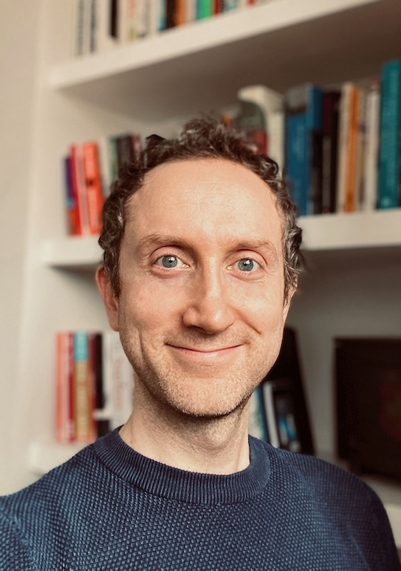

Academic GP
Imperial College London
I am a General Practitioner working within the NHS and an academic based at Imperial College London. I have diverse range of research interests, from hypertension and global health research, to applications of machine learning methods to understanding the connections between diseases. I am currently completing a clinical PhD funded by the Wellcome Trust exploring patterns of multimorbidity (having two or more long-term conditions at the same time) and whether groups or "clusters" of people with similar diseases have similarities in how they use healthcare services.My PhD is exploring clusters of diseases and patients based on similarities between the occurrence of diseases in people.
I am a Trustee and Lead Statistician for the May Measurement Month global blood pressure screening campaign. The campaign started in 2017 and has screened over 5 million people worldwide, detecting over 1 million cases of raised blood pressure.
In 2021-2023 I worked on an evaluation of the impact of COVID oximetry @home, an NHS programme which provided people at high risk of complications from COVID-19 with a portable pulse oximeter to monitor their oxygen levels at home. I also worked on an evaluation of the impact of remote consultations in primary and secondary care in London during the pandemic.
CV will appear here